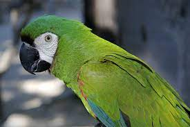
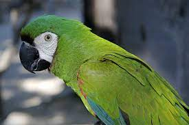

Caracteristicas de la APP
Beneficios para tus mascotas
Las mascotas son animales de compañía que proporcionan beneficios tanto emocionales como físicos a sus dueños. Algunos de los beneficios de tener una mascota incluyen:
- Compañía: Las mascotas son compañeros leales y amorosos que pueden ayudar a redu cir la soledad y el estrés en sus dueños.
- Mejora de la salud mental: Los estudios han demostrado que tener una mascota puede ayudar a reducir los síntomas de ansiedad, depresión y estrés.
- Ejercicio: Las mascotas necesitan actividad física regular, lo que puede motivar a sus dueños a hacer más ejercicio también.
- Beneficios sociales: Las mascotas pueden ser una excelente manera de conocer gente nueva y establecer relaciones sociales.
- Reducción del riesgo de enfermedades: Se ha demostrado que tener una m ascota puede reducir el riesgo de enfermedades como la hipertensión arterial, la diabetes y el colesterol alto.
- Cuidar de una mascota puede enseñar a los niños y adu ltos sobre la responsabilidad y el cuidado de otro ser vivo.
 
